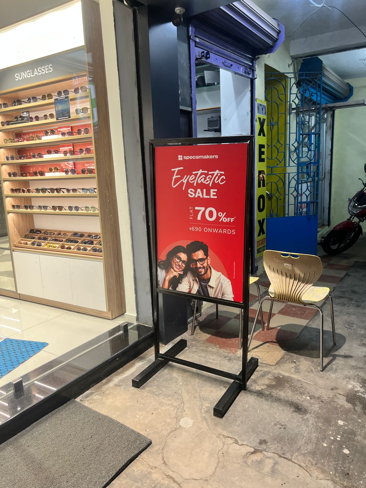

Mudichur Store Visit Report
Comprehensive Store Inspection & Analysis
Date: 28th October 2025
Report Summary
Store Overview: The store inspection was conducted to assess overall operations, visual merchandising, customer experience, and compliance with brand standards.
Key Observations: The store demonstrates strong potential with several areas performing well. Customer engagement is positive, and staff members show good product knowledge.
Detailed Analysis
1
Window Display & Entrance

Observation: The window display requires updating to reflect current seasonal collections. The entrance area shows good lighting but could benefit from clearer brand messaging.
Recommendation: Refresh window displays bi-weekly with featured products. Add prominent brand elements at eye level. Consider adding a welcome mat and ensuring entrance glass is spotless.
Recommendation: Refresh window displays bi-weekly with featured products. Add prominent brand elements at eye level. Consider adding a welcome mat and ensuring entrance glass is spotless.
2
Product Display & Merchandising
Observation: Product displays are functional but lack creative presentation. Some high-value items are positioned in low-traffic areas. Shelving appears cluttered in certain sections.
Recommendation: Reorganize displays using the pyramid principle with hero products at eye level. Create themed displays to tell product stories. Implement the "less is more" approach for premium items.
Recommendation: Reorganize displays using the pyramid principle with hero products at eye level. Create themed displays to tell product stories. Implement the "less is more" approach for premium items.
3
Signage & Communication
Observation: Pricing labels are inconsistent in format and placement. Promotional signage is minimal and not strategically placed. Wayfinding within the store needs improvement.
Recommendation: Standardize all price tags and labels. Create clear category signage. Add promotional standees at key decision points. Ensure all text is legible from 6 feet away.
Recommendation: Standardize all price tags and labels. Create clear category signage. Add promotional standees at key decision points. Ensure all text is legible from 6 feet away.
4
Store Ambiance & Cleanliness


Observation: Overall cleanliness is acceptable but requires attention to detail. Lighting is adequate but uneven in some areas. Background music volume is appropriate. Some corners show dust accumulation.
Recommendation: Implement a daily deep-cleaning checklist. Adjust lighting to create focal points. Ensure consistent temperature control. Add subtle air freshening. Polish all glass surfaces daily.
Recommendation: Implement a daily deep-cleaning checklist. Adjust lighting to create focal points. Ensure consistent temperature control. Add subtle air freshening. Polish all glass surfaces daily.
5
Customer Service & Checkout Area
Observation: Staff members are courteous and helpful. Checkout counter is organized but could be more inviting. Impulse purchase items are not optimally placed. Queue management needs attention during peak hours.
Recommendation: Add comfortable seating near trial areas. Place high-margin impulse items near checkout. Implement a queue management system. Train staff on upselling techniques. Keep the counter clutter-free with only essential items visible.
Recommendation: Add comfortable seating near trial areas. Place high-margin impulse items near checkout. Implement a queue management system. Train staff on upselling techniques. Keep the counter clutter-free with only essential items visible.